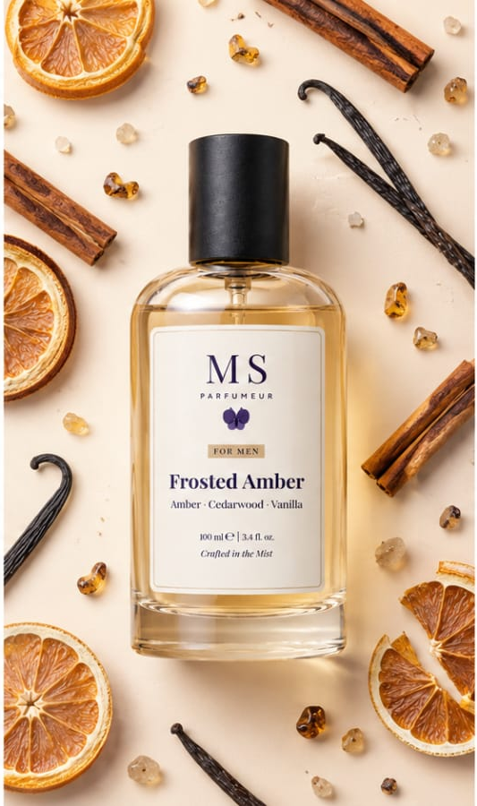
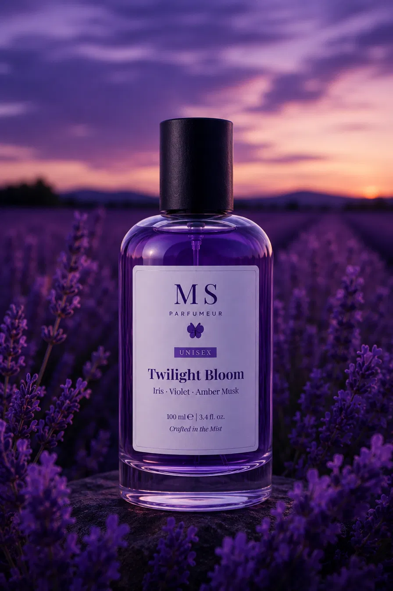

Guide 01
How to Choose Your Signature Scent
Posted by Mistwood Scents · June 2026 · 3 min read

Finding a perfume you actually want to wear every day isn't as hard as it sounds — but it does take a little patience. Here's how we'd approach it.
Start with what you already like
Think about smells you genuinely enjoy in everyday life — fresh laundry, coffee, the rain, flowers, wood. These are clues to the fragrance families you'll probably enjoy. If you love the smell of clean linen, you'll likely enjoy fresh or musky scents. If you love flowers, floral fragrances are a good starting point.
Don't rush the decision
A perfume can smell completely different on your skin compared to the bottle or a paper strip. If you can, try a small amount on your wrist and wear it for a few hours before deciding. The scent will evolve as it dries down — what you smell in the first few minutes isn't what you'll smell at the end of the day.
Think about when you'll wear it
Some scents work better for daytime — lighter, fresher options like Morning Mist or Citrus Bloom. Others are better for evenings out — richer, deeper scents like Velvet Oud or Rose Noir. You don't have to pick just one — many people have a daytime scent and an evening scent.
Start with a smaller size
If you're trying a new fragrance for the first time, our 50ml bottles are a great way to test it without committing to a full 100ml. Once you know you love it, you can always go back for the bigger size.
Guide 02
Top Notes vs Base Notes — What Does It All Mean?
Posted by Mistwood Scents · June 2026 · 3 min read

If you've ever looked at a perfume description and seen words like "top notes of bergamot" or "base notes of sandalwood" and had no idea what that means — this guide is for you.
Top notes
These are the first smells you notice when you spray a perfume. They're usually light and fresh — citrus, herbs, or light florals. They hit you immediately but fade quickly, usually within 15-30 minutes. Think of them as the first impression of a fragrance.
Example: In Citrus Bloom, the top notes are bergamot and lemon — bright and fresh right when you spray it.
Middle notes (heart notes)
These come through after the top notes fade — usually within 30 minutes to an hour. They make up the main character of the fragrance and last several hours. Most floral and spice notes sit here.
Example: In Rose Noir, the heart note is rose — you start to notice it more as the perfume settles on your skin.
Base notes
These are the deepest, richest notes — the ones that linger longest on your skin. Woody, musky, and resinous notes usually live here. They can last 6-8 hours or even longer. Base notes are what most people remember about a fragrance.
Example: In Velvet Oud, the base notes are oud and musk — deep, warm, and long-lasting.
Why does this matter?
Understanding notes helps you make better choices when picking a perfume. If you love how something smells on paper but hate it after an hour on your skin, it's likely because the base notes don't suit you — even if the top notes did. This is why wearing a fragrance for a few hours before deciding is so important.
Guide 02
Top Notes vs Base Notes — What Does It All Mean?
Posted by Mistwood Scents · June 2026 · 3 min read
If you've ever looked at a perfume description and seen words like "top notes of bergamot" or "base notes of sandalwood" and had no idea what that means — this guide is for you.
Top notes
These are the first smells you notice when you spray a perfume. They're usually light and fresh — citrus, herbs, or light florals. They hit you immediately but fade quickly, usually within 15-30 minutes. Think of them as the first impression of a fragrance.
Example: In Citrus Bloom, the top notes are bergamot and lemon — bright and fresh right when you spray it.
Middle notes (heart notes)
These come through after the top notes fade — usually within 30 minutes to an hour. They make up the main character of the fragrance and last several hours. Most floral and spice notes sit here.
Example: In Rose Noir, the heart note is rose — you start to notice it more as the perfume settles on your skin.
Base notes
These are the deepest, richest notes — the ones that linger longest on your skin. Woody, musky, and resinous notes usually live here. They can last 6-8 hours or even longer. Base notes are what most people remember about a fragrance.
Example: In Velvet Oud, the base notes are oud and musk — deep, warm, and long-lasting.
Why does this matter?
Understanding notes helps you make better choices when picking a perfume. If you love how something smells on paper but hate it after an hour on your skin, it's likely because the base notes don't suit you — even if the top notes did. This is why wearing a fragrance for a few hours before deciding is so important.
Guide 03
How to Make Your Perfume Last Longer
Posted by Mistwood Scents · June 2026 · 2 min read

One of the most common complaints about perfume is that it fades too quickly. The good news is that how you apply and store your fragrance makes a huge difference. Here are some simple tips that actually work.
Apply to pulse points
Pulse points are areas where your blood vessels are close to the skin — they generate heat, which helps the fragrance project and last longer. The best spots are your wrists, the inside of your elbows, the base of your throat, and behind your ears. You don't need to rub your wrists together — that actually breaks down the scent molecules faster.
Moisturise before spraying
Fragrance clings to moisturised skin much better than dry skin. Apply an unscented lotion or body oil to your pulse points before spraying your perfume. If you want to go all in, use a moisturiser with a similar scent family — for example, a vanilla body lotion before spraying Vanilla Dusk.
Don't spray on your clothes
It might seem like a good idea, but fabric can actually distort the scent and leave stains. Skin is always the better canvas for fragrance — it reacts with your body chemistry to bring out the best in the perfume.
Store your perfume correctly
Heat, light, and humidity are the enemies of perfume. Keep your bottles away from windows, bathrooms, and anywhere that gets warm. A cool, dark drawer or shelf is ideal. Stored properly, a bottle of perfume can last 3-5 years without losing its quality.
Layer your scents
If you want your perfume to really last, try layering — use a scented body wash or lotion in the same fragrance family before applying your perfume. This builds up the scent from multiple layers and makes it much harder to lose through the day.